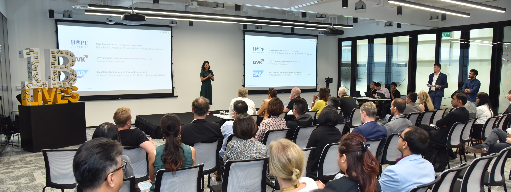

Some interesting facts about me : I love to code, design and paint.
The world of technology had fascinated me since childhood and hence I pursued my
bachelor's degree in Computer Science from
Cummins College in Pune, India.
After my bachelor's degree, I started working as a developer at
SAP Labs India.
The best part about my job was that I got to work very closely with customers,
understanding their business problems and finding technical solutions. This work
experience has helped me develop a strong knowledge of technical business processes
and issue resolutions.
In 2019, India was facing massive floods and millions of people were distressed.
I wanted to help people and hence I formed a team of three equally motivated people.
I developed a minimal viable product based on Artificial Intelligence technology,
to accelerate the process of disaster response.
I headed customer engagements and defined the product vision and strategy.
This project was able to impact more than 10,000+ lives and is hence the highlight
of my career so far. During this journey, I witnessed the power of data and AI
technology and hence decided to pursue my master's in Management Information Systems
to gain in-depth knowledge in Data Mining, Business Intelligence and
Data Visualization.
During my master's here, I have successfully finished courses such as Enterprise
Data Management, Data Mining & Business Intelligence, Statistics and
Business Communications.
In my free time, I am an artist, and I love to paint, sketch and do photography.
Overall, I have a very technical background and a creative mindset. I strive to use
my skills to solve business and social problems.


Hi, I am Samiksha Deshmukh.
I am currently pursuing a master's
degree in Management Information Systems from the
Eller College of Management, the
University of Arizona.
I am a data driven decision maker having strong problem-solving and analytical skills.
Scroll down to read my story.